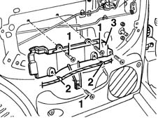
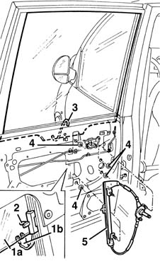

7010D34 rear side door manual window mechanism - r r with door panel and mount frame removed
- Path
- Procedures > 70 FITTINGS > 7010 PASSENGER COMPARTMENT REAR SIDE DOORS > 7010D rear side door window glasses > 7010D34 rear side door manual window mechanism - r r with door panel and mount frame removed
- Kind
- repair procedure (removal / refitting; the operation number is the code)
- Applies to
- all engines; all production periods
- Interactive page
- https://sloeber94.github.io/elrnDB-fMltpl/en/#/2892092
Applies to: all engines; all production periods
 Removing
Removing
 Refitting
Refitting7010A04 rear side door water guard protection - r r or arrange with door panel removed
1. Undo the bolts.
2. Disconnect the wiring from the retainers.
3. Remove the bracket.

Applies to: all engines; all production periods
1. Open the window (1a) about 1/4 of the way, then disconnect the window's safety retainer (1b).
2. Disconnect the window from the drive pin.
3. Manually raise the window to the closed position; fit a support hook as shown in the figure to prevent accidental lowering of the window.
4. Undo the electric window unit nuts.
5. Remove the electric window unit from the door frame.

Applies to: all engines; all production periods
Refitting
RemovingCheck the condition of the electric window unit.
Refit the electric window unit in the door frame, securing it with its nuts.
Remove the window support hook.
Open the window about 1/4 of the way, then connect it to the drive pin.
Connect the window's safety retainer.
Check that the electric window works properly.
7010A04 rear side door water guard protection - r r or arrange with door panel removed